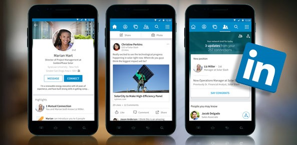

Mobilna Aplikacija
2008. godine LinkedIn je lansirao mobilnu verziju stranice koja je imala ograničene mogućnosti u odnosu na kompjutersku. 2011. lansirao je "CardMunch" aplikaciju koja je skenirala poslovne kartice i pretvarala ih u kontakte te od 2013. CardMunch je bio dostupan kao aplikacija LinkedIn-a.
